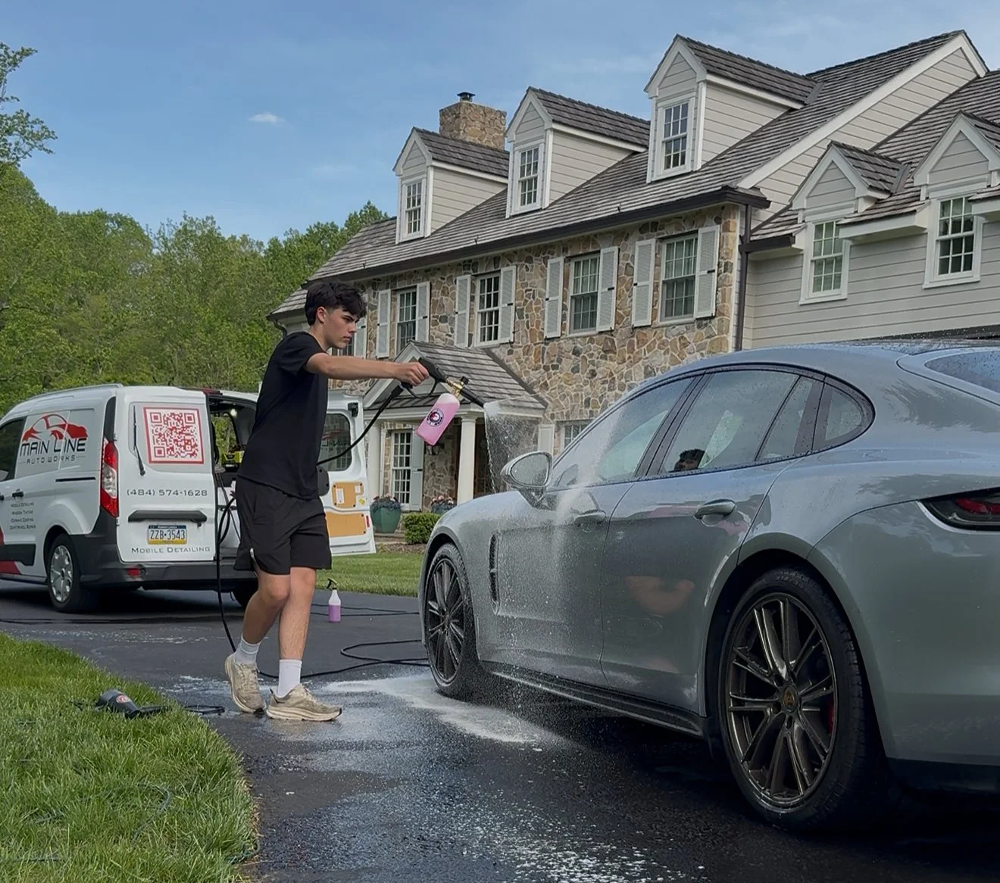

Auto detailing in West Chester, PA
Interior, exterior and full details for daily drivers and exotics alike. At our shop on Phoenixville Pike, or in your driveway.
Mobile detailing
Our van carries its own filtered water and its own power, so we never tap your home's or your office's. You get the same equipment and products we use in the shop, in your driveway or office lot.
Rather drop it off? We'll pick your car up and bring it back while you're at work.
Book a mobile detailWhat clients say
Leave a Google reviewKyle and team did some voodoo magic to transform our cars. They took their time and made sure everything was perfect. Their mobile service was very convenient.
EmilyMy car looks phenomenal and the service was amazing. Kyle picked up my car and dropped it off while I was at the office. 10/10.
JohnMy daughter Devon's Jeep looks absolutely beautiful. It looks brand new. Thank you for your spotless and meticulous work!
MaryKyle and team have detailed my cars and I can't stop raving how much of a difference the cars look and feel after their work. A+
DerekThe full interior detail along with the tint removal looks terrific. You should give them a try if you are in the area.
Will
Detailing questions
What's included in a full detail?
Inside and out: hand wash, wheels and tires, paint decontamination, vacuuming, carpet and seat cleaning, trim and glass, and a protective finish. We adjust it to your car's condition.
How long does a detail take?
An interior or exterior detail takes about 2 to 4 hours. A full detail takes about 4 to 8 hours, longer for heavy soiling, pet hair or stains.
How often should I get my car detailed?
Every 3 to 6 months for most drivers, and more often if the car sees winter road salt, pets or a daily commute.
Can you remove stains, pet hair and odors?
Usually, yes. We use steam cleaning, hot water extraction, enzyme treatments and ozone odor neutralization to reduce or eliminate them.
Do you need my water or power for a mobile detail?
No. Our van carries its own filtered water and its own power.
Where we detail
From our West Chester shop and in our mobile van, we serve:
- West Chester
- Exton
- Downingtown
- Malvern
- Paoli
- Berwyn
- Wayne
- Villanova
- Bryn Mawr
- Haverford
- Ardmore
- Newtown Square
- Media
- Glen Mills
- Chester Springs
- Phoenixville
- Collegeville
- King of Prussia
- Thorndale
Book a detail
Pick a time online, or call and we'll fit you in.